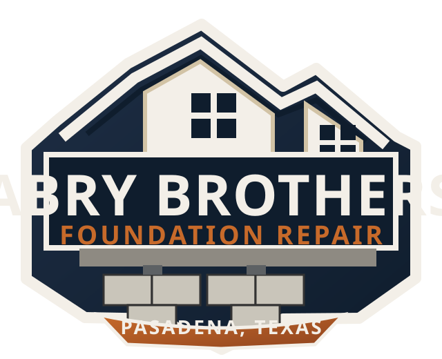
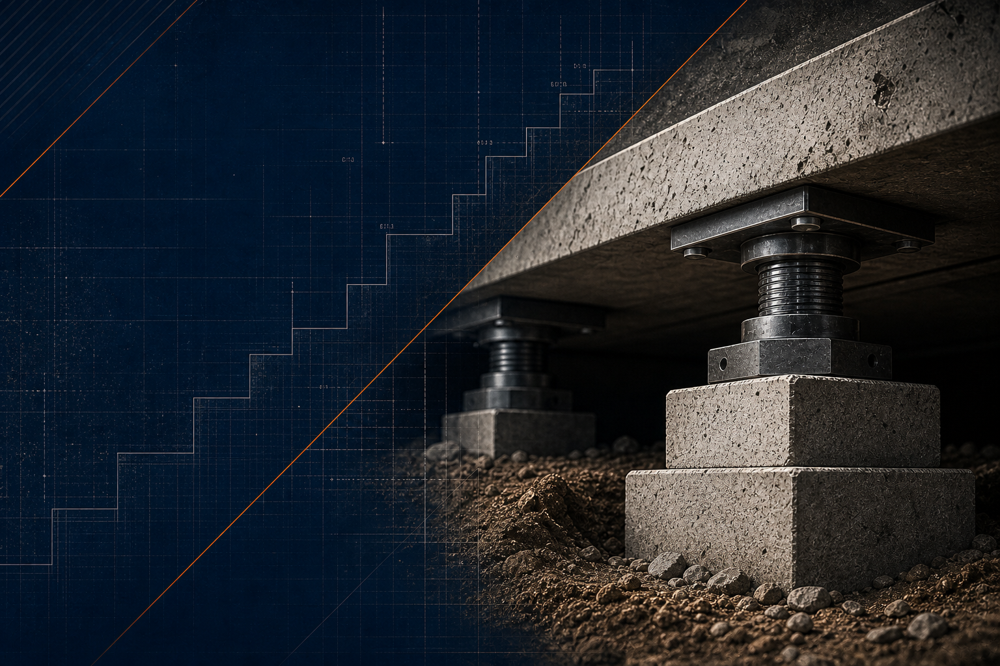

Cracks in Brick or Sheetrock
Interior or exterior cracks can signal foundation movement beneath the home.
Schedule Inspection
Abry BrothersAbry Brothers Foundation Rpr
Foundation repair, structural support, drainage solutions, and home leveling services in Pasadena, Texas and surrounding areas.

Foundation warning signs
Small cracks can point to bigger movement below the surface. A professional inspection can help determine whether your foundation needs repair.
Interior or exterior cracks can signal foundation movement beneath the home.
Schedule InspectionFrames may shift when the foundation settles or lifts unevenly.
Schedule InspectionNoticeable slope changes often deserve a professional elevation check.
Schedule InspectionSeparations can indicate structural movement around wall openings.
Schedule InspectionStair-step cracks or widening brick joints should be inspected.
Schedule InspectionPoor drainage can create soil movement and foundation stress.
Schedule InspectionServices
From free inspections to slab repair, pier and beam stabilization, drainage improvements, and structural crack repair, Abry Brothers provides practical solutions for foundation problems.
Foundation inspection, elevation review, structural assessment, and drainage review.
Learn MorePressed concrete pilings, steel piers, spot lifts, stabilization, and slab support.
Learn MoreHouse leveling, beam replacement, joist support, shims, and block reset work.
Learn MoreSurface drains, French drains, root barriers, gutter extensions, and moisture control.
Learn MoreBrick crack repair, interior wall repair, concrete crack sealing, and monitoring.
Learn MoreUnder-slab tunneling, access tunnels, commercial properties, and follow-up visits.
Learn MoreContractor service board
Prices vary based on structure type, soil movement, access, severity, and repair requirements. Final pricing requires inspection and written estimate.
Free inspection
Foundation movement can get worse over time. Schedule an inspection to understand what is happening beneath your home and what repair options make sense.
Process
Why choose Abry Brothers
Abry Brothers Foundation Rpr focuses on practical foundation solutions, clear communication, and quality work designed to protect your home.
Free inspections and direct evaluation of the structure.
Repair options based on what the property actually needs.
Pasadena location with nearby Houston-area coverage.
Foundation, crack, slab, and support work in one repair focus.
Soil moisture and water movement considered during inspection.
Repair work aimed at protecting the home long term.
Foundation education
Cracks, sticking doors, uneven floors, and drainage problems can be early signs of foundation movement. A professional evaluation can help determine whether your home needs monitoring, drainage correction, or structural repair.
Expansive soil can move as moisture changes.
Standing water can increase pressure around the foundation.
Roots can affect soil moisture near slabs and beams.
Concrete slabs can settle, lift, or crack under stress.
Supports can shift and require leveling or reset work.
Uneven moisture can create uneven pressure below the home.
Reviews
They really seemed to care about my home and the quality of their work.
Ryan NeeleyThe entire process was very painless and the results have been great.
Hilda ReyesProject photos
Photo slots are ready for real job photos when they are added.
Concrete support and stabilization work.
Future project photo slot.
Future project photo slot.
Future project photo slot.
Future project photo slot.
Future comparison photo slot.
Service area
Abry Brothers Foundation Rpr serves homeowners and properties in Pasadena, Texas and nearby communities.
Request inspection
Protect your home from foundation damage before it gets worse.
Contact
Map embed placeholder